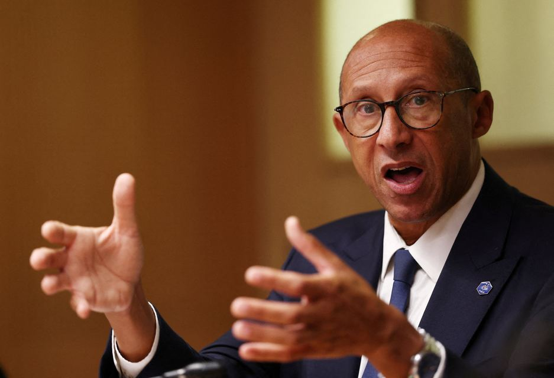

La UEFA presenta al francés Philippe Diallo para derrocar a Infantino como presidente de la FIFA

El mandamás de la Federación Francesa es el elegido por el fútbol europeo a solo dos días del cierre para presentar candidaturas
Desde que a finales de julio se conociera el plan de la FIFA de vender a capital privado un porcentaje de la explotación del Mundial de Fútbol, la UEFA había buscado sin éxito un candidato para derrocar a Gianni Infantino. Este lunes, a dos días de que se cierre el plazo para presentar las candidaturas, el organismo europeo dio su respaldo a Philippe Diallo, presidente de la Federación Francesa de Fútbol y miembro del Comité Ejecutivo de UEFA.